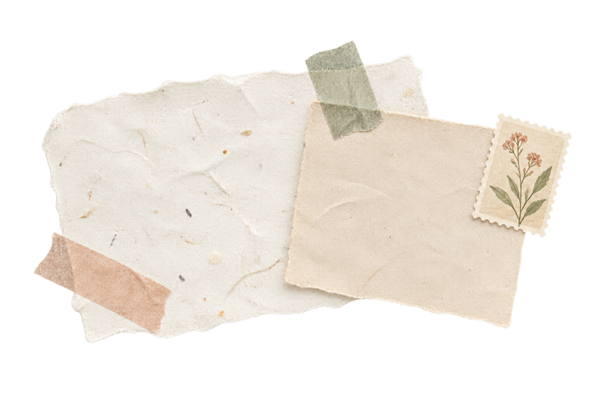
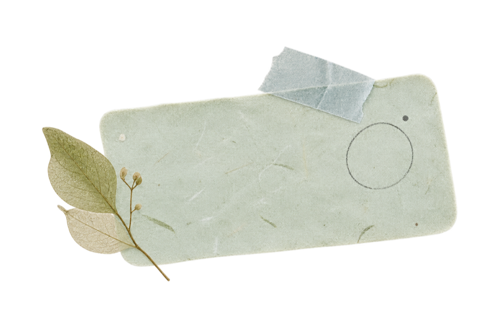

Make a page
Start with a blank day. Write a note, draw with Pencil, add a photo, or leave the page almost empty.

The daily rhythm
A simple rhythm for a more observant day.

Three small invitations
Open a page when you want to. Add what feels true. Close it when you are done. The shape of the journal is there to make room, not fill it.
Start with a blank day. Write a note, draw with Pencil, add a photo, or leave the page almost empty.

Bring in stickers, stamps, washi and paper notes, or make a tape or a stamp of your own, when they help the day feel more like yours.

Days gather into a Year Wall and a personal collection—an archive made from the way you actually live.

Inside the page
The app’s surfaces are deliberately quiet so your marks, photos and words can carry the colour.
Use the typeface that fits the day, resize a note when it needs room, and keep the paper light enough to feel held rather than pinned down.
Add a photo or lift a subject into a sticker. Your image can remain a photograph, or become one of the page’s quieter pieces.
Fine, pencil, nib, pastel, watercolor and highlighter tools share one calm ink palette and a range of weights.
A small calendar of pages lets you return by date, notice the gaps, and open a day without turning the archive into a feed. The whole Year Wall is free.
Cut a washi tape in your own pattern and colours, or snap a photo and press it as a stamp. Your first tape and your first stamp are free.
Everyone gets a quiet invitation: the date and a way straight into drawing or writing. With dab-dab+ the widget shows your page, and an Open Tin widget keeps a few loose pieces close.
Ready when you are
See the paper studio, the curated editions, and the support paths that keep the quiet parts easy.